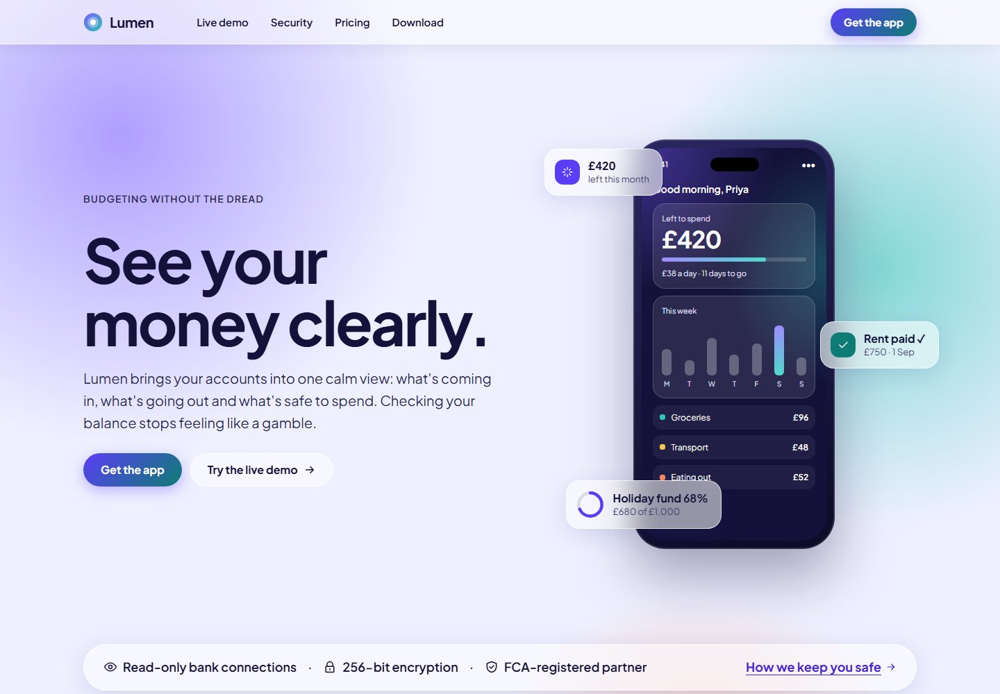

Design exploration / Glassmorphism
Lumen
A calm budgeting experience with translucent surfaces and an interactive, three-persona dashboard.

The idea behind the interface.
A fictional budgeting app presented through translucent panels and soft colour fields. The design balances glassmorphism with legible financial information, carrying the same visual system from the landing page into a hands-on dashboard preview.
Inside the build
- Three bundled personas switch balances, transactions, budgets, and savings goals without a network request.
- Native budget sliders update spending totals; SVG charts include text summaries and hidden data tables.
- A contrast-checking build gate covers overlapping backgrounds, with solid-panel and increased-contrast fallbacks.
Scope & context
Concept project with sample financial data. Bank connections, regulatory references, and app-store destinations are placeholders, not a live financial service.